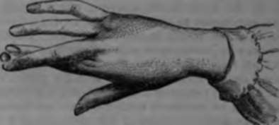

Sensation Of Temperature
Description
This section is from the book "Wonders Of The Human Body", by Auguste Le Pileur. Also available from Amazon: Wonders of the Human Body.
Sensation Of Temperature
We recognize by contact with a body whether its temperature is the same, or whether it is higher or lower than the point of skin which touches it; in other words, touch gives us an idea of the relative temperature of bodies. But the sensation may change in a few moments, as the object in contact with the skin rapidly imparts or borrows heat; and if it is warmer or colder than the skin, an equilibrium is soon established when the difference is inconsiderable. And the same body may produce a sensation of cold or heat successively without change of temperature, according as the surface of the skin at the moment of contact is warm or cold; thus, if we take a bath in water cooler than the air, the temperature of the air, which seemed low on entering the bath, appears warm when we come out a few minutes after. It is for the same reason that we find the air of a cellar cool in summer, and warm in winter, although it has not varied.
The sensation is marked in proportion to the conducting quality of the object in contact with the skin. Air seems warmer than water at the same temperature, because the air being a worse conductor of heat takes less from the skin in a given time. Air in motion, by exciting evaporarion, causes a very sensible loss of heat, as every one knows; and the atmosphere also, which seems very cold when the wind blows, grows warmer apparently when the wind ceases, or when we are sheltered from it.
The contrary effect from that caused by pressure is here seen; the sensation is marked in proportion to the extent of surface. The whole hand appreciates the temperature better than a single finger; and a body of a given temperature, applied over a large surface, will give a sensation of more intense heat than a warmer body which touches only a small portion of skin. We can easily understand that the skin absorbs in a given time more heat by a surface four inches square, than by one only one inch square, and the impression transmitted to the brain in this experiment represents rather the sum of the heat absorbed from all parts of the surface in contact, than the temperature of the body with which the experiment is made.
When we touch a body of a lower temperature, the same sensation is produced as when we touch one at a high temperature. Contact with a ball of frozen mercury causes a burning, sensation, the same as that of iron heated to 100° C. (2120 F.), though we know that mercury freezes at —400 C. (—400 F.) Voyagers in the Polar regions are compelled to envelop the metallic portions of their instruments in non-conducting substances, so as to be able to handle them with impunity.
The skin and the mucous membranes do not appreciate differences of temperature with equal nicety in every portion of their surface, and the regions which are most sensitive to contact are not those which best indicate the temperature. The palmar surface of the fingers, the tongue, and the lips, are less impressionable in this respect than the skin of the cheeks, eyelids, elbow, and the pituitary membrane. We may perhaps attribute this relative insensibility in the hand, and the mucous membrane of the cheeks, to the habit of contact with warm bodies. The hand becomes rapidly inured to hold objects hot enough to cause a painful sensation to persons unaccustomed to it. We see this in chemists, blacksmiths, and others. The skin need not necessarily be thickened, although this condition also decreases the sensibility. We often see persons of mature age bear without pain the contact of food so hot that younger people could not swallow it The mucous membranes of the oesophagus and the stomach are more sensitive in this respect than that of the mouth; but when the food is held immovable for a few seconds between the palate and the tongue, the heat is absorbed, and the food or drink may be swallowed with impunity.
It is clear from the preceding remarks that the sense of touch is an unreliable thermometer; it is sufficient, however, to guide us in matters relating to health, and in regard to external objects, especially when we permit its full development by touch.
The hand is the principal means of exercising the touch. The organization of this admirable instrument, its numerous articulations, the freedom and variety of its movements, the tactile sensibility which is so fully developed in the palmar surface of the fingers enables us to obtain, by means of it, ideas of the form and relative situation of objects, of their morion, their resistance, their weight, their solid or fluid condition, of their temperature, etc The hand grasps objects, moves over their surface, follows their outline, measures their distance and their extent, as far as the length of the lever of which it forms the extremity will permit By the aid of this lever it raises bodies, estimates their weight, their firmness, and their elasticity. In touching them with the ends of the fingers it perceives the details of their form and their relative value. We have seen of how great importance delicacy of touch is to the artist, it is no less precious to the physician, and it renders him service which he asks in vain of any other sense. It is by the touch that he arrives at a knowledge of the state of the circulation, the existence of fluids in the tissues, and their normal or morbid consistence.
By exercise the touch attains extreme delicacy. The blind learn to read with facility from letters printed in relief, and to execute certain work with tools. Saunderson, professor of mathematics in the university of Cambridge, was blind from his cradle, but he had attained to such exquisite perfection of touch, that in a set of medals he could distinguish the genuine from the counterfeit pieces, though the latter were so well executed as to deceive a connoisseur judging by sight He felt, by the impression of the air on his face, when he was passing near a tree. It is said that Jean Gonnelli, a blind sculptor, could model in clay an exact copy of a statue the outline of which he had studied by touch, but doubtless we must take this anecdote with some allowance for exaggeration.
However this may be, the touch has been from the earliest antiquity an object of the most enthusiastic admiration to naturalists. It has been considered as the most exact and the most infallible of the senses, able to control their testimony and rectify their errors. It has been placed in the front rank, and held up as a type of which the others are only the modifications. Buffon says, "It is by the touch alone that we acquire complete and accurate knowledge; it is this sense which rectifies all the other senses, which might only delude us and make us err, if it did not guide our judgment" But Buffon thought that "the difference between our senses results only from the more or less external position of the nerves, and from their greater or less number in the parts which constitute the organs." The illustrious' naturalist did not recognize the special functions of the sensitive nerves; the sensations of colours, of odours, of flavours, and of sounds, were for him only tactile impressions. How could we admit that feeling could guide us in judging of the colour of objects, of their taste, their odour, or their sound! Even while admitting that we can compare the excitation of the skin by contact to that of the retina by the luminous waves, it is not the less impossible to establish the least analogy between touch and sight, since the retina is insensible to contact, and as well as the optic nerve, conveys, not a tactile, but a luminous impression to the brain. As for the other senses, if air in vibration comes in contact with the tympanum of the deaf man he perceives no sound, though he is sensible of contact from foreign bodies on the tympanum; if odoriferous or savoury bodies come in contact with the pituitary membrane or with the tongue of a man who has lost the sense of smell or taste, he perceives neither odours nor flavours, although he is perfectly aware of the presence of a foreign body in the nose or mouth.
The touch therefore cannot replace the other senses, though it sometimes corrects their impressions, but it needs to be constantly controlled- and completed in the sensations which it produces in us. If it enables us to learn form, it is the eye which tells us of colour, and often perfects or corrects our notions of distance, extent, and even of form; as for instance, we distinguish less easily with the touch than with the eye a sphere from an ellipsoid which is nearly spherical. And besides it is when the touch has been exercised under the control of the sight that it furnishes us with the most exact ideas, for its results are then confirmed by those which we possess already in regard to time, motion, space, and the normal position of bodies, etc Yet even in these conditions the sense of feeling may be the source of error. Muller says, and rightly too, that by touch we feel not the object which touches us, but that part of the tegument where the contact takes place and the impressions which it receives. The idea of external objects given by touch then is, when completely analyzed, the possibility of distinguishing the different parts of the body as occupying a different place in space. The result is, that if the parts of our bodies are momentarily in an abnormal condition, we receive, notwithstanding, the sensation in the relative order that the regions from which these sensations emanate preserve in a normal condition. If, for example, we cause a ball to revolve between two fingers of the same hand, we have the sensation of a single body touching these two fingers; but if we cross the fingers and place the ball between their extremities, the sensation is that of two balls, each one rolling in contact with one of the fingers.
Fig. 43.
The sensations of touch are somewhat persistent, especially when the tactile impression is joined to that of general sensbility. Thus when we have carried a burden on the shoulder or when any part of the body has been subjected to great and prolonged pressure, we still perceive the sensation some time after the weight is removed and the pressure has ceased but in such cases the tissues subjacent to the skin take part in the sensation as well as the skin itself.
The organ of touch may also be the seat of impression which are subjective, or which arise from internal causes physical or moral. The sight of a striking spectacle or the emotion caused by a narrative produces in some persons a marked sensation of cold; the idea of shivering causes an impression which resembles it, and the fear of tickling is sufficient to produce its effects.
Feeling is modified by various influences; cold, or sanguineous congestion resulting from violent exercise, diminishes or suppresses for a time the sensibility of the skin; certain occupations, by thickening the epidermis, destroy the delicacy of the touch; and lastly, age diminishes the cutaneous perspiration, the epidermis dries up, and the skin no longer has the suppleness and elasticity which renders the touch so delicate in youth.
Tactile sensibility is often intensified by disease, and sometimes modified, suspended, or destroyed. We see this in trances which supervene after, or are provoked under, the influence of certain nervous affections. Charlatanism, even in our day, avails itself of this phenomenon, which we confine ourselves to simply mentioning here.
Continue to: